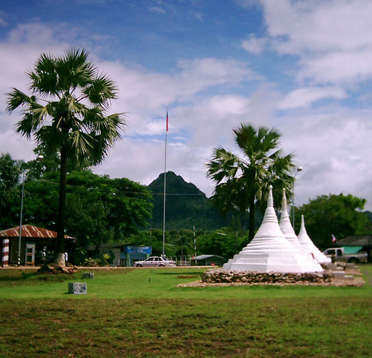

| Nowadays, the trains only go a bit west of Kanchanaburi, so one has to continue travels west by bus. Next stop was the new town of Sangkhlaburi, which replaced its namesake when the Khao Laem Dam flooded out the old town. The town now boasts Thailand's longest wooden bridge, which you walk across for the Mon settlement of Wang Kha, one of the ethnic minority tribes in this part of SE Asia. The whole region is really a laid-back place, so I walked around a bunch, and took lots of snapshots. The designs of window boxes, shutters, and other features on the village houses are inspiring. Great place for bird watching. Saw several flycatchers from my guesthouse balcony. |
|
| Also headed the last 20 kilometers to the border crossing at Three Pagodas Pass. But first went to the immigration office in town to verify that only $10, one-day passes are issued for this crossing. Travel is then restricted to within 800 meters of the border post. Even your passport will not be stamped, though photos and paperwork must be filled out here and your passport surrendered until your return. Decided to look around, check out the vendors at the border, but give entry a miss. Arrived at the bus station just in time for the 9 AM mini bus to the border. Once there, was told to wait for the 10 AM bus. As 10 AM rolled around, I'm told to wait for 11 AM. Apparently, they won't run the buses unless they get enough people, and only a few other people had shown up, though it was hard to tell who was just killing time, and who wanted to go wherever. Three or four buses were in the lot, so supply was not the problem. I finally asked if the bus would go at 11, or 12, or today at all. (As if they really understood me!) They understood enough to answer the bus could be chartered -- for 15 times the normal fare. Around the corner was a motorbike taxi kiosk. The first driver said he would take me for only 150 baht round trip, so I hopped on the back.
There really was very little at the border, so you would never guess it is a major smuggling thoroughfare. Even the three pagodas are small and unimpressive. Walking up to the flag post and welcome signs, one gets the impression you might already be a few feet across the border. All I really did was snap a few pictures, have a drink with my "motor" escort, and head back to Sangkhlaburi. While verifying the bus schedule for the next morning, found that the early bus for Kanchanaburi connects with the noon train, arriving in Bangkok by early evening. But not before one shocker. Right on the road from my guesthouse is a shop with bamboo panel walls similar to designs from Flores, Indonesia. Trying to ask the shopkeeper about them was futile as we certainly had language difficulties. Don't know if she spoke Mon, Karen, or Burmese, but my bus was about to leave.
It's taken awhile, but I'm learning to get around in Bangkok using the local buses, such as the #53 which runs between my guesthouse and the main train station, the #3 to the JJ Weekend Market, the #9 for the Sam Sen train station, and the 64, 33, and 30 for other destinations. Fare on most of the non-AC busses is 3.5 baht, which converts to less than $0.10. |

|